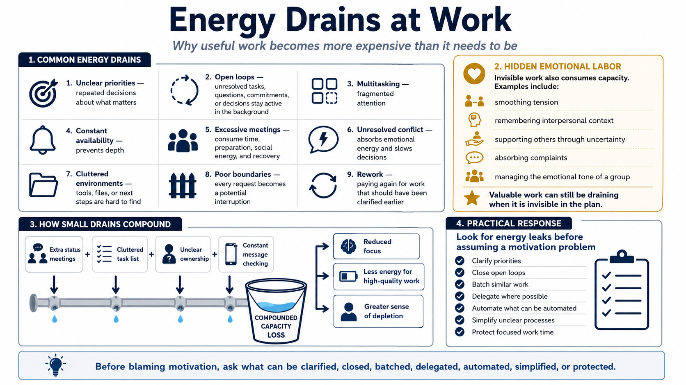

Energy Drains and Energy Leaks
Connecting to LMS... Progress: in progress

Narration
Energy drains are the conditions that make useful work more expensive than it needs to be. Unclear priorities force repeated decisions about what matters. Open loops keep unresolved tasks, questions, commitments, or decisions active in the background. Multitasking fragments attention. Constant availability prevents depth. Excessive meetings consume not only time, but also preparation, social energy, and recovery.
Unresolved conflict is another drain. Even when people avoid talking about it, conflict can absorb emotional energy, distort communication, and slow decisions. Cluttered environments can create friction when tools, files, information, or next steps are hard to find. Poor boundaries turn every request into a potential interruption. Rework drains energy because people have to pay again for work that could have been clarified earlier.
Hidden emotional labor is often invisible in plans. It includes smoothing tension, remembering interpersonal context, supporting others through uncertainty, absorbing complaints, or managing the emotional tone of a group. This work can be valuable, but it still consumes capacity. When it is not acknowledged, people may feel depleted without being able to point to a visible task that explains it.
Small drains compound across a week. A few extra status meetings, a cluttered task list, unclear ownership, and constant message checking may not look dramatic in isolation. Together, they can consume the capacity needed for high-quality work. Before assuming a motivation problem, look for energy leaks. The practical question is what can be clarified, closed, batched, delegated, automated, simplified, or protected.